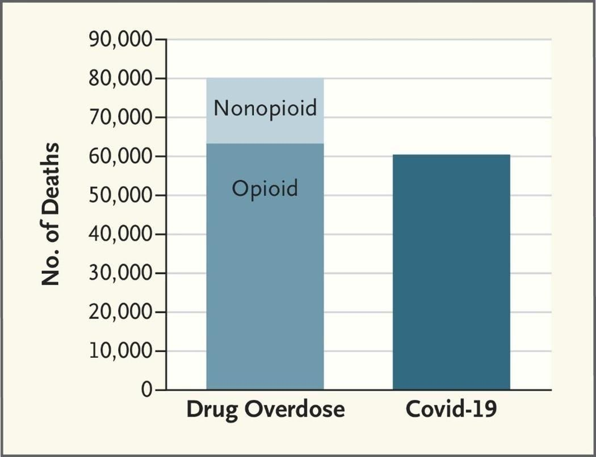

Peak Pandemic - Guess What Was Killing More Young Americans Than CovidCovid-19 killed approximately 60,000 young Americans between 15 and 54 years old in 2021. By any measure, that is an awful statistic, representing a staggering number of loved ones lost to the virus. But as awful as that statistic is, guess what killed even more young Americans. It wasn’t guns, although almost 30,000 young Americans died from firearms that year, including homicides, suicides, and accidents. It wasn’t cancer or heart disease, which primarily kill older people. Nor was it diseases like asthma or diabetes which, even though they can strike at early ages, rarely cause young people to die. So what caused so many young people to die? It was drug overdoses, which killed around 80,000 young Americans in 2021. And, as the below picture from the New England Journal of Medicine shows, the vast majority of those overdoses were related to opioids: Cumulative Deaths from Drug Overdose Versus Deaths from Covid-19 among People 15 to 54 Years of Age, United States, 2021(Source: New England Journal of Medicine) The opioid epidemic is ravaging our population, especially people who should have experienced decades more of life. To give young Americans the best chance at living long and meaningful lives, we need to concentrate more resources to combatting opioid use disorders. |
 |